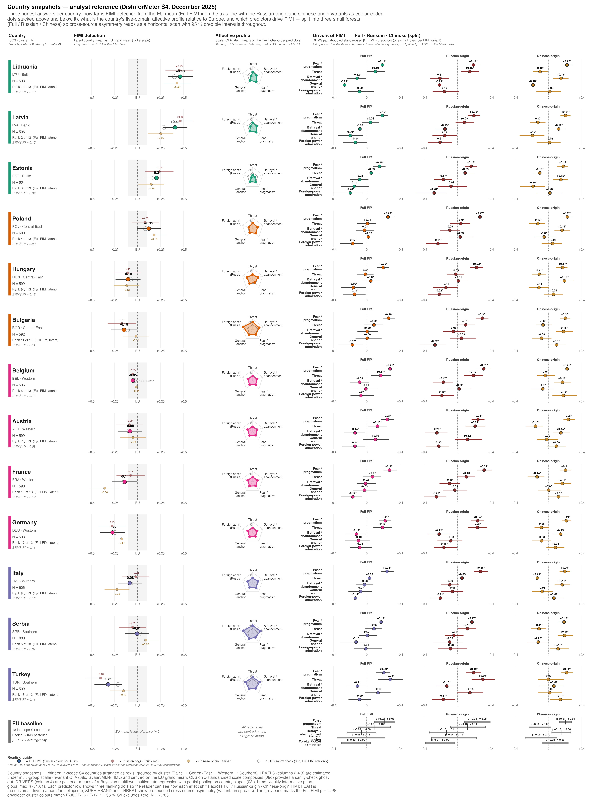
In-detail country profiles
A diagnostic profile for every S4 country: detection, source asymmetry, receptivity profile, and the domains most aligned with detection
How to read a country profile
Each profile below is a diagnostic, not a verdict. It pulls every number live from the aggregate tables and lays out, for one country:
- Detection — Full, Russian-origin, and Chinese-origin FIMI detection (higher = better), and the Russian − Chinese source gap.
- Receptivity — the overall DisInforMeter composite and the five-domain profile (higher = more receptivity-relevant endorsement).
- Alignment — the domains most strongly associated with Full FIMI detection in that country (positive = travels with detection; negative = blind-spot signal). These are cross-sectional associations, not causal effects.
Comparisons are to the 13-country average (the pooled S4 reference: Full FIMI detection = 4.86; overall composite = 4.07).
WarningUse country profiles to target follow-up, not to rank countries
Country cards are prioritisation devices. They should trigger country-specific qualitative review, narrative-exposure analysis, and repeat measurement — not be quoted as league tables without the scoring, uncertainty, and invariance caveats.
At-a-glance: the country snapshot grid
Code
scripts/policy_report/_helpers_snapshot.R (country-snapshot composer)
#' scripts/policy_report/_helpers_snapshot.R
#'
#' Composition helper for the country-snapshot family (F-22..F-29). Each
#' wrapper passes a country ISO3 to `build_country_snapshot()` and the helper
#' returns a single composed patchwork object combining
#'
#' - a small overall-FIMI bar with EU range (full / Russian / Chinese)
#' - a five-axis radar with EU pooled-mean overlay
#' - a mini bar plot of the three strongest local FIMI predictors
#' (marginal r on metric-invariant factor scores, bounded in [-1, +1])
#'
#' Inputs (all in outputs/policy_report/tables/):
#' s4_country_means_fimi.csv — country × FIMI variant means
#' s4_country_means_byconstruct_long.csv — country × construct means
#' s4_country_means_higherorder.csv — country × higher-order means
#' s4_eu_pooled_benchmarks.csv — pan-European benchmarks
#' s4_country_predictor_rank.csv — top-3 marginal predictors
#' s4_sample_composition_by_country.csv — country N for sub-title
#'
#' Public surface
#' --------------
#' build_country_snapshot(iso3) → list(plot, n, missing_constructs)
#' POLICY_REPORT_SNAPSHOT_AXES tibble of axis_id / axis_label / axis_full
suppressPackageStartupMessages({
library(ggplot2)
library(dplyr)
library(readr)
library(tibble)
library(here)
library(patchwork)
})
source(here::here("scripts", "policy_report", "_theme.R"))
source(here::here("scripts", "policy_report", "_helpers_radar.R"))
POLICY_REPORT_SNAPSHOT_TABLES <- list(
fimi = here::here("outputs", "policy_report", "tables",
"s4_country_means_fimi.csv"),
byconstruct = here::here("outputs", "policy_report", "tables",
"s4_country_means_byconstruct_long.csv"),
higherorder = here::here("outputs", "policy_report", "tables",
"s4_country_means_higherorder.csv"),
eu_benchmarks = here::here("outputs", "policy_report", "tables",
"s4_eu_pooled_benchmarks.csv"),
predictor = here::here("outputs", "policy_report", "tables",
"s4_country_predictor_rank.csv"),
sample = here::here("outputs", "policy_report", "tables",
"s4_sample_composition_by_country.csv")
)
# Five radar axes (clockwise from 12 o'clock). Keys match construct_id in
# s4_country_means_higherorder.csv / s4_country_means_byconstruct_long.csv.
POLICY_REPORT_SNAPSHOT_AXES <- tibble::tribble(
~construct_id, ~axis_label, ~axis_full,
"threat", "Threat", "Threat",
"aband", "Betrayal /\nabandonment", "Betrayal / abandonment",
"fear", "Fear /\npragmatism", "Fear / pragmatism",
"gen", "General\nanchor", "General DisInforMeter anchor",
"admir", "Foreign-power\nadmiration", "Foreign-power admiration"
)
# Pretty labels for predictor IDs that appear in s4_country_predictor_rank.csv.
# SUPF in that table is the pooled S4 COMP predictor, which loads on BOTH the
# Russia (fru*) and China (fch*) affective-admiration items (cached fit
# s4_pred_comp_full.rds) — i.e. the full foreign-power admiration domain, not a
# Russia-only anchor. The split SUPF (Russia) / SUPFCH (China) factors live
# only in the scalar / OLS factor-MEANS tables (08c / 08d).
POLICY_REPORT_PREDICTOR_LABELS <- c(
THREAT = "Threat",
ABAND = "Betrayal / abandonment",
FEAR = "Fear / pragmatism",
GEN = "General anchor",
SUPF = "Foreign-power admiration",
SUPFCH = "Foreign-power admiration (China)",
ADMIR = "Foreign-power admiration"
)
# FIMI variants reported on the FIMI bar. Names match construct_id in
# s4_country_means_byconstruct_long.csv (and s4_eu_pooled_benchmarks.csv).
POLICY_REPORT_SNAPSHOT_FIMI <- tibble::tribble(
~construct_id, ~variant_label,
"fimi_full", "Full FIMI",
"fimi_russian_origin", "Russian-origin",
"fimi_chinese_origin", "Chinese-origin"
)
# Cluster palette: shared with F-08 / F-16 / F-17 so the country fill colour
# tells the same story across the report.
.snapshot_cluster_palette <- function() {
lvl <- c("Baltic", "Central-East", "Southern", "Western")
setNames(policy_report_palette("categorical", n = length(lvl)), lvl)
}
#' Load every snapshot CSV (cached on first call within a single Rscript run).
#' Each script sources the helper anew, but reading 6 tiny CSVs at start-up
#' is cheap; we keep the I/O local and explicit instead of using `memoise`.
.snapshot_load_inputs <- function() {
out <- lapply(POLICY_REPORT_SNAPSHOT_TABLES, function(p) {
df <- readr::read_csv(p, show_col_types = FALSE,
comment = if (basename(p) ==
"short_disinformeter_languages.csv") "#"
else "")
policy_report_check_input(df, p)
df
})
out
}
#' Stop with a structured error when an ISO3 is missing from any of the three
#' inputs the country snapshot depends on.
.snapshot_required_presence <- function(iso3, inputs) {
required <- list(
"s4_country_predictor_rank.csv" = "predictor",
"s4_country_means_byconstruct_long.csv" = "byconstruct",
"s4_country_means_fimi.csv" = "fimi",
"s4_country_means_higherorder.csv" = "higherorder",
"s4_eu_pooled_benchmarks.csv" = NA # cross-country benchmark
)
missing_in <- character()
for (nm in names(required)) {
key <- required[[nm]]
if (is.na(key)) next
df <- inputs[[key]]
if (!(iso3 %in% df$country_iso3)) missing_in <- c(missing_in, nm)
}
if (length(missing_in) > 0L) {
stop(sprintf(
"Country %s missing from: %s",
iso3, paste(missing_in, collapse = ", ")
), call. = FALSE)
}
invisible(NULL)
}
# ---------------------------------------------------------------------------
# Panel constructors
# ---------------------------------------------------------------------------
#' Panel 1 — country FIMI bar with EU pooled means (3 variants).
.snapshot_fimi_bar <- function(iso3, inputs) {
by_country <- inputs$byconstruct %>%
dplyr::filter(country_iso3 == iso3,
construct_id %in% POLICY_REPORT_SNAPSHOT_FIMI$construct_id) %>%
dplyr::left_join(POLICY_REPORT_SNAPSHOT_FIMI, by = "construct_id") %>%
dplyr::select(construct_id, variant_label, mean,
ci_lower, ci_upper, n)
eu <- inputs$eu_benchmarks %>%
dplyr::filter(construct_id %in% POLICY_REPORT_SNAPSHOT_FIMI$construct_id) %>%
dplyr::transmute(construct_id,
eu_mean = mean,
eu_min = min_country_mean,
eu_max = max_country_mean)
dat <- by_country %>%
dplyr::left_join(eu, by = "construct_id") %>%
dplyr::mutate(variant_label = factor(variant_label,
levels = POLICY_REPORT_SNAPSHOT_FIMI$variant_label))
if (nrow(dat) != nrow(POLICY_REPORT_SNAPSHOT_FIMI)) {
stop(sprintf("Snapshot %s: FIMI variant(s) missing — got %d of %d.",
iso3, nrow(dat), nrow(POLICY_REPORT_SNAPSHOT_FIMI)),
call. = FALSE)
}
cluster <- inputs$byconstruct %>%
dplyr::filter(country_iso3 == iso3) %>%
dplyr::pull(cluster) %>% unique() %>% head(1)
bar_fill <- .snapshot_cluster_palette()[cluster]
if (is.na(bar_fill)) bar_fill <- "#666666"
ggplot2::ggplot(dat, ggplot2::aes(x = mean, y = variant_label)) +
# EU range (min ←→ max country) as a faint grey band.
ggplot2::geom_segment(
ggplot2::aes(x = eu_min, xend = eu_max,
y = variant_label, yend = variant_label),
colour = "grey78", linewidth = 4.5, lineend = "round",
inherit.aes = FALSE
) +
# EU pooled mean as a darker tick on the band.
ggplot2::geom_point(
ggplot2::aes(x = eu_mean, y = variant_label),
shape = 124, size = 6, colour = "grey35", stroke = 1,
inherit.aes = FALSE
) +
# Country mean: filled dot + CI whisker.
ggplot2::geom_errorbarh(
ggplot2::aes(xmin = ci_lower, xmax = ci_upper),
height = 0.25, colour = "grey25", linewidth = 0.55
) +
ggplot2::geom_point(size = 4.0, colour = bar_fill) +
# Value label is placed ABOVE the dot — keeps it clear of the EU tick,
# the EU pooled-mean glyph, and the horizontal CI whisker even when the
# country mean sits within the EU min-max band.
ggplot2::geom_text(
ggplot2::aes(label = sprintf("%.2f", mean)),
hjust = 0.5, vjust = -1.05, size = 3.0, colour = "grey15",
family = .policy_report_resolve_font(POLICY_REPORT_BASE_FONT),
fontface = "bold"
) +
ggplot2::scale_x_continuous(
limits = c(min(c(dat$ci_lower, dat$eu_min)) - 0.30,
max(c(dat$ci_upper, dat$eu_max)) + 0.30),
breaks = scales::pretty_breaks(4),
expand = ggplot2::expansion(mult = c(0.02, 0.02))
) +
ggplot2::scale_y_discrete(limits = rev(levels(dat$variant_label))) +
ggplot2::labs(
title = "FIMI detection vs EU range",
subtitle = "Country mean (dot), 95 % CI; grey band = EU country min-to-max range; tick = EU pooled mean",
x = "Mean rating, 1 = not manipulated → 7 = certainly manipulated",
y = NULL
) +
theme_policy_report(base_size = 9) +
ggplot2::theme(
panel.grid.major.y = ggplot2::element_blank(),
panel.grid.major.x = ggplot2::element_line(colour = "grey94"),
plot.title = ggplot2::element_text(face = "bold",
size = 10),
plot.subtitle = ggplot2::element_text(colour = "grey30",
size = 8.2,
margin = ggplot2::margin(t = 0,
b = 6)),
axis.text.y = ggplot2::element_text(face = "bold", size = 9)
)
}
#' Panel 2 — five-axis radar, country polygon + EU pooled-mean reference.
.snapshot_radar <- function(iso3, inputs) {
ho <- inputs$higherorder %>%
dplyr::filter(country_iso3 == iso3,
construct_id %in% POLICY_REPORT_SNAPSHOT_AXES$construct_id) %>%
dplyr::left_join(POLICY_REPORT_SNAPSHOT_AXES, by = "construct_id")
if (nrow(ho) != nrow(POLICY_REPORT_SNAPSHOT_AXES)) {
missing_ax <- setdiff(POLICY_REPORT_SNAPSHOT_AXES$construct_id, ho$construct_id)
stop(sprintf("Snapshot %s: higher-order construct(s) missing: %s",
iso3, paste(missing_ax, collapse = ", ")),
call. = FALSE)
}
country_name <- ho$country_name[1L]
cluster <- ho$cluster[1L]
bar_fill <- .snapshot_cluster_palette()[cluster]
eu <- inputs$eu_benchmarks %>%
dplyr::filter(construct_id %in% POLICY_REPORT_SNAPSHOT_AXES$construct_id) %>%
dplyr::left_join(POLICY_REPORT_SNAPSHOT_AXES, by = "construct_id") %>%
dplyr::transmute(axis_label, mean)
vals <- ho %>%
dplyr::transmute(axis_label, mean, group_id = country_name)
group_pal <- setNames(unname(bar_fill), country_name)
p <- build_radar(
values = vals,
axis_col = "axis_label",
value_col = "mean",
group_col = "group_id",
axis_order = POLICY_REPORT_SNAPSHOT_AXES$axis_label,
scale_min = 1,
scale_max = 7,
scale_mid = 4,
reference_values = eu,
reference_label = "EU pooled mean",
group_colours = group_pal,
group_linetypes = setNames("solid", country_name),
fill_alpha = 0.28,
line_size = 0.95,
point_size = 2.0,
label_size = 2.6,
base_size = 9,
scaffolding = TRUE
) +
ggplot2::theme(plot.margin = ggplot2::margin(t = 6, r = 18, b = 4, l = 18)) +
ggplot2::guides(colour = "none", fill = "none", linetype = "none") +
ggplot2::labs(
title = "Five-domain profile",
subtitle = "Country polygon vs EU pooled-mean (grey)"
) +
ggplot2::theme(
plot.title = ggplot2::element_text(face = "bold", size = 10),
plot.subtitle = ggplot2::element_text(colour = "grey30",
size = 8.2,
margin = ggplot2::margin(t = 0,
b = 4))
)
p
}
#' Panel 3 — top-3 local predictors (marginal r on factor scores).
.snapshot_predictors <- function(iso3, inputs) {
rk <- inputs$predictor %>%
dplyr::filter(country_iso3 == iso3) %>%
dplyr::arrange(rank)
if (nrow(rk) == 0L) {
stop(sprintf("Snapshot %s: no rows in predictor rank table.", iso3),
call. = FALSE)
}
cluster <- inputs$byconstruct %>%
dplyr::filter(country_iso3 == iso3) %>%
dplyr::pull(cluster) %>% unique() %>% head(1)
rk <- rk %>%
dplyr::mutate(
pred_label = dplyr::coalesce(
POLICY_REPORT_PREDICTOR_LABELS[as.character(predictor_id)],
as.character(predictor_id)
),
pred_label = factor(pred_label, levels = rev(unique(pred_label))),
direction = ifelse(std_all >= 0, "Higher predictor → higher FIMI",
"Higher predictor → lower FIMI"),
sig_lgl = as.logical(sig),
sig_mark = ifelse(!is.na(sig_lgl) & sig_lgl,
sprintf("%+.2f", std_all),
sprintf("%+.2f (n.s.)", std_all))
)
dir_pal <- c(
"Higher predictor → higher FIMI" = "#1A8754",
"Higher predictor → lower FIMI" = "#B2182B"
)
ggplot2::ggplot(rk, ggplot2::aes(x = std_all, y = pred_label,
fill = direction, colour = direction)) +
ggplot2::geom_vline(xintercept = 0, colour = "grey55", linewidth = 0.4) +
ggplot2::geom_col(width = 0.62, alpha = 0.88, linewidth = 0.0) +
ggplot2::geom_text(
ggplot2::aes(label = sig_mark,
hjust = ifelse(std_all >= 0, -0.10, 1.10)),
colour = "grey15", size = 3.0, fontface = "bold",
family = .policy_report_resolve_font(POLICY_REPORT_BASE_FONT)
) +
ggplot2::scale_fill_manual(values = dir_pal,
breaks = names(dir_pal),
drop = FALSE) +
ggplot2::scale_colour_manual(values = dir_pal,
breaks = names(dir_pal),
drop = FALSE) +
ggplot2::scale_x_continuous(
limits = c(min(c(rk$std_all, 0)) - 0.15,
max(c(rk$std_all, 0)) + 0.15),
breaks = scales::pretty_breaks(4)
) +
ggplot2::labs(
title = "What drives FIMI here",
subtitle = "Top-3 country-specific marginal r (factor scores; [-1, +1])",
x = "Marginal correlation r",
y = NULL
) +
theme_policy_report(base_size = 9) +
ggplot2::theme(
panel.grid.major.y = ggplot2::element_blank(),
panel.grid.major.x = ggplot2::element_line(colour = "grey94"),
legend.position = "bottom",
legend.title = ggplot2::element_blank(),
legend.text = ggplot2::element_text(size = 7.5),
legend.key.height = grid::unit(0.4, "lines"),
plot.title = ggplot2::element_text(face = "bold", size = 10),
plot.subtitle = ggplot2::element_text(colour = "grey30",
size = 8.2,
margin = ggplot2::margin(t = 0,
b = 6)),
axis.text.y = ggplot2::element_text(face = "bold", size = 9)
)
}
# ---------------------------------------------------------------------------
# Public surface
# ---------------------------------------------------------------------------
# Lookup from ISO3 to figure number (F-22..F-28). Georgia (GEO) deferred.
SCRIPT_ID_LOOKUP <- c(
LTU = 22L,
DEU = 23L,
POL = 24L,
HUN = 25L,
BGR = 26L,
SRB = 27L,
TUR = 28L
)
#' Build a country snapshot composite.
#'
#' @param iso3 ISO-3 country code.
#' @return list(plot, country_name, n, caption_meta)
build_country_snapshot <- function(iso3) {
stopifnot(is.character(iso3), length(iso3) == 1L, nchar(iso3) == 3L)
inputs <- .snapshot_load_inputs()
.snapshot_required_presence(iso3, inputs)
# Country meta — pull from higherorder (every snapshot needs all 5 domains
# there, so it is the strictest gate and always populated for in-scope iso3).
meta <- inputs$higherorder %>%
dplyr::filter(country_iso3 == iso3) %>%
dplyr::slice_head(n = 1L)
country_name <- meta$country_name
cluster <- meta$cluster
n_country <- max(inputs$byconstruct$n[inputs$byconstruct$country_iso3 == iso3],
na.rm = TRUE)
# Overall FIMI rank: pull country's full-FIMI mean and rank within the 13.
full_means <- inputs$byconstruct %>%
dplyr::filter(construct_id == "fimi_full")
full_rank <- full_means %>%
dplyr::arrange(dplyr::desc(mean)) %>%
dplyr::mutate(rk = dplyr::row_number()) %>%
dplyr::filter(country_iso3 == iso3) %>%
dplyr::slice_head(n = 1L)
fimi_panel <- .snapshot_fimi_bar(iso3, inputs)
radar_panel <- .snapshot_radar(iso3, inputs)
pred_panel <- .snapshot_predictors(iso3, inputs)
# Composition — two-column layout:
# left: FIMI bar (top) + predictor bar (bottom)
# right: large radar
composed <- ((fimi_panel / pred_panel) + patchwork::plot_layout(heights = c(1, 1))) |
radar_panel
composed <- composed + patchwork::plot_layout(widths = c(1.15, 1.0))
caption_prefix <- sprintf(
paste0("S4 (2025) — %s (cluster: %s). FIMI detection bar shows country ",
"mean and 95 %% CI against the EU country min-to-max range (tick ",
"= pooled mean). Radar axes (clockwise): Threat, Betrayal / ",
"abandonment, Fear / pragmatism, General anchor, Foreign-power ",
"admiration; perimeter = 7. Predictor bar = top-3 country-specific ",
"marginal correlations of higher-order factor scores with full ",
"FIMI (n.s. flagged inline)."),
country_name, cluster
)
caption <- policy_report_caption(
source = "outputs/policy_report/tables/s4_country_means_*.csv & s4_country_predictor_rank.csv",
n = n_country,
script = sprintf("F-%02d_%s_snapshot.R",
SCRIPT_ID_LOOKUP[[iso3]] %||% 0L,
tolower(iso3)),
prefix = caption_prefix,
width = 130L
)
rank_txt <- if (nrow(full_rank) == 1L)
sprintf("Overall FIMI rank: %d of 13", full_rank$rk)
else ""
composed <- composed + patchwork::plot_annotation(
title = sprintf("%s — DisInforMeter snapshot", country_name),
subtitle = sprintf("S4 (December 2025) | N = %s | %s",
format(n_country, big.mark = ","), rank_txt),
caption = caption,
theme = theme_policy_report(base_size = 11)
)
list(
plot = composed,
country_name = country_name,
n = n_country,
cluster = cluster,
overall_rank = if (nrow(full_rank) == 1L) full_rank$rk else NA_integer_,
inputs_meta = list(
predictor_rows = sum(inputs$predictor$country_iso3 == iso3),
higherorder_rows = sum(inputs$higherorder$country_iso3 == iso3),
byconstruct_rows = sum(inputs$byconstruct$country_iso3 == iso3)
)
)
}Profiles by region
The thirteen in-scope countries are grouped into four regional clusters. Within each cluster they are ordered by Full FIMI detection (highest first).
Baltic cluster
Lithuania
Regional cluster: Baltic.
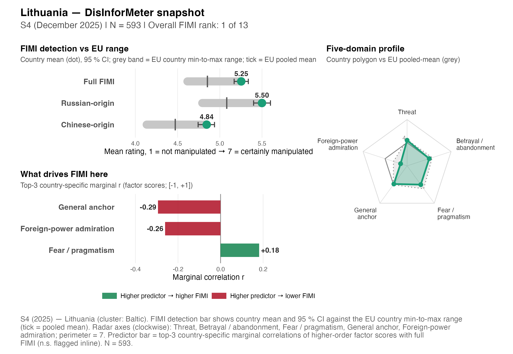
| Indicator | Value | vs 13-country avg. |
|---|---|---|
| Full FIMI detection | 5.25 | ▲ above avg. |
| Russian-origin detection | 5.50 | |
| Chinese-origin detection | 4.84 | |
| Russian − Chinese gap | +0.65 | |
| Overall receptivity composite | 3.66 | ▼ below avg. |
Five-domain receptivity profile (1–7; higher = more endorsement):
| Domain | Mean | EU avg. |
|---|---|---|
| Betrayal/Aband. | 4.02 | 4.43 |
| Admiration | 1.89 | 2.86 |
| Fear/Pragm. | 4.02 | 4.67 |
| General | 3.92 | 4.05 |
| Threat | 4.31 | 4.40 |
Strongest domain → Full-FIMI-detection associations (BRMS; positive = aligned with detection):
- General Anchor: β = -0.27 [-0.45, -0.10] — blind-spot (lower detection)
- Fear/Pragmatism: β = +0.19 [+0.11, +0.26] — aligned with detection
- Betrayal/Abandonment: β = -0.12 [-0.24, -0.01] — blind-spot (lower detection)
Latvia
Regional cluster: Baltic.
| Indicator | Value | vs 13-country avg. |
|---|---|---|
| Full FIMI detection | 5.14 | ▲ above avg. |
| Russian-origin detection | 5.42 | |
| Chinese-origin detection | 4.68 | |
| Russian − Chinese gap | +0.74 | |
| Overall receptivity composite | 3.79 | ▼ below avg. |
Five-domain receptivity profile (1–7; higher = more endorsement):
| Domain | Mean | EU avg. |
|---|---|---|
| Betrayal/Aband. | 4.12 | 4.43 |
| Admiration | 2.29 | 2.86 |
| Fear/Pragm. | 4.60 | 4.67 |
| General | 3.71 | 4.05 |
| Threat | 4.32 | 4.40 |
Strongest domain → Full-FIMI-detection associations (BRMS; positive = aligned with detection):
- General Anchor: β = -0.20 [-0.35, -0.04] — blind-spot (lower detection)
- Fear/Pragmatism: β = +0.19 [+0.11, +0.26] — aligned with detection
- Foreign-Power Admiration: β = -0.14 [-0.29, +0.00] (n.s.) — blind-spot (lower detection)
Estonia
Regional cluster: Baltic.
| Indicator | Value | vs 13-country avg. |
|---|---|---|
| Full FIMI detection | 5.04 | ▲ above avg. |
| Russian-origin detection | 5.30 | |
| Chinese-origin detection | 4.60 | |
| Russian − Chinese gap | +0.70 | |
| Overall receptivity composite | 3.22 | ▼ below avg. |
Five-domain receptivity profile (1–7; higher = more endorsement):
| Domain | Mean | EU avg. |
|---|---|---|
| Betrayal/Aband. | 3.54 | 4.43 |
| Admiration | 1.88 | 2.86 |
| Fear/Pragm. | 3.53 | 4.67 |
| General | 3.29 | 4.05 |
| Threat | 3.83 | 4.40 |
Strongest domain → Full-FIMI-detection associations (BRMS; positive = aligned with detection):
- Foreign-Power Admiration: β = -0.20 [-0.40, -0.05] — blind-spot (lower detection)
- Fear/Pragmatism: β = +0.15 [+0.07, +0.22] — aligned with detection
- General Anchor: β = -0.15 [-0.31, +0.03] (n.s.) — blind-spot (lower detection)
Central-East cluster
Poland
Regional cluster: Central-East.
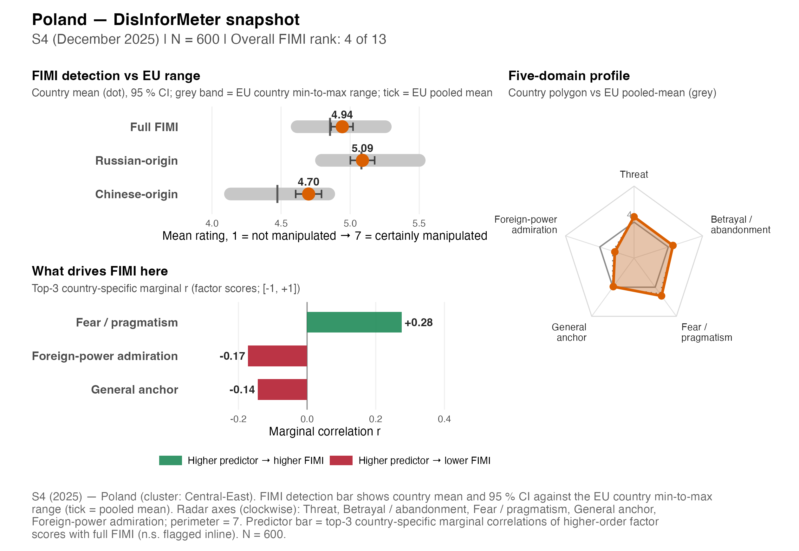
| Indicator | Value | vs 13-country avg. |
|---|---|---|
| Full FIMI detection | 4.94 | ▲ above avg. |
| Russian-origin detection | 5.09 | |
| Chinese-origin detection | 4.70 | |
| Russian − Chinese gap | +0.39 | |
| Overall receptivity composite | 4.05 | ▼ below avg. |
Five-domain receptivity profile (1–7; higher = more endorsement):
| Domain | Mean | EU avg. |
|---|---|---|
| Betrayal/Aband. | 4.41 | 4.43 |
| Admiration | 2.68 | 2.86 |
| Fear/Pragm. | 4.90 | 4.67 |
| General | 3.94 | 4.05 |
| Threat | 4.44 | 4.40 |
Strongest domain → Full-FIMI-detection associations (BRMS; positive = aligned with detection):
- Fear/Pragmatism: β = +0.25 [+0.19, +0.33] — aligned with detection
- Foreign-Power Admiration: β = -0.17 [-0.32, -0.05] — blind-spot (lower detection)
- Betrayal/Abandonment: β = -0.03 [-0.13, +0.09] (n.s.) — blind-spot (lower detection)
Hungary
Regional cluster: Central-East.
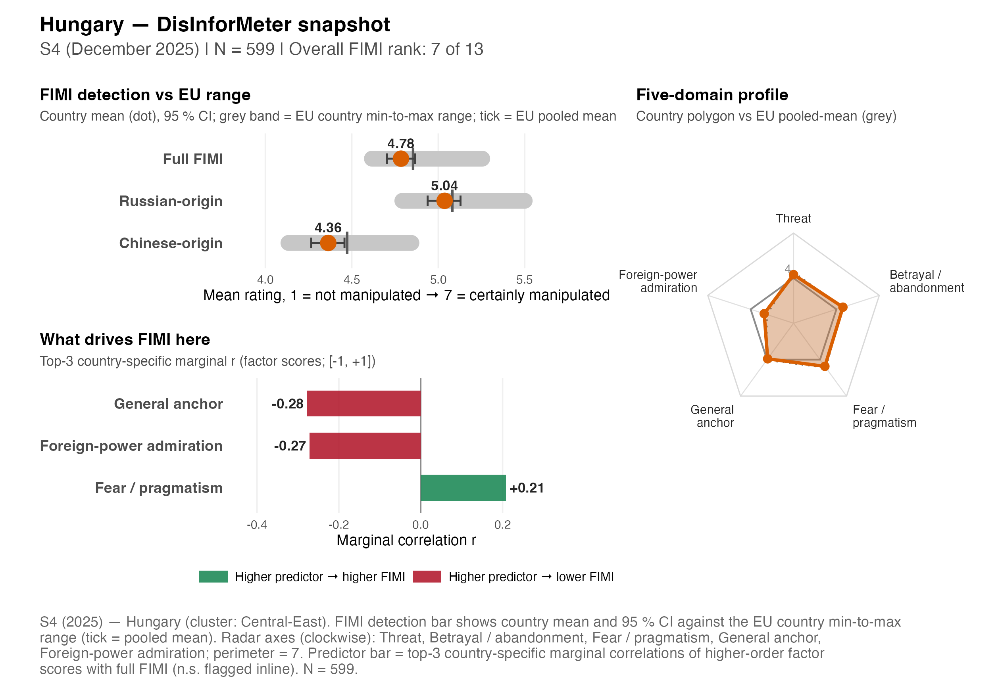
| Indicator | Value | vs 13-country avg. |
|---|---|---|
| Full FIMI detection | 4.78 | ▼ below avg. |
| Russian-origin detection | 5.04 | |
| Chinese-origin detection | 4.36 | |
| Russian − Chinese gap | +0.67 | |
| Overall receptivity composite | 4.03 | ▼ below avg. |
Five-domain receptivity profile (1–7; higher = more endorsement):
| Domain | Mean | EU avg. |
|---|---|---|
| Betrayal/Aband. | 4.46 | 4.43 |
| Admiration | 3.05 | 2.86 |
| Fear/Pragm. | 4.55 | 4.67 |
| General | 3.93 | 4.05 |
| Threat | 4.24 | 4.40 |
Strongest domain → Full-FIMI-detection associations (BRMS; positive = aligned with detection):
- Fear/Pragmatism: β = +0.20 [+0.12, +0.27] — aligned with detection
- General Anchor: β = -0.16 [-0.31, -0.01] — blind-spot (lower detection)
- Foreign-Power Admiration: β = -0.15 [-0.28, -0.01] — blind-spot (lower detection)
Bulgaria
Regional cluster: Central-East.
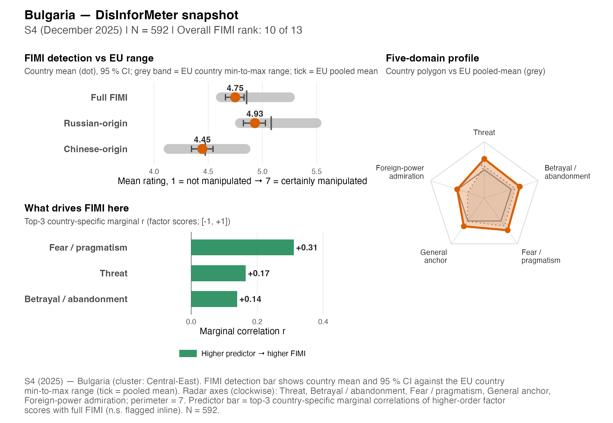
| Indicator | Value | vs 13-country avg. |
|---|---|---|
| Full FIMI detection | 4.75 | ▼ below avg. |
| Russian-origin detection | 4.93 | |
| Chinese-origin detection | 4.45 | |
| Russian − Chinese gap | +0.48 | |
| Overall receptivity composite | 4.80 | ▲ above avg. |
Five-domain receptivity profile (1–7; higher = more endorsement):
| Domain | Mean | EU avg. |
|---|---|---|
| Betrayal/Aband. | 4.96 | 4.43 |
| Admiration | 4.03 | 2.86 |
| Fear/Pragm. | 5.21 | 4.67 |
| General | 4.70 | 4.05 |
| Threat | 5.17 | 4.40 |
Strongest domain → Full-FIMI-detection associations (BRMS; positive = aligned with detection):
- Fear/Pragmatism: β = +0.26 [+0.20, +0.34] — aligned with detection
- Foreign-Power Admiration: β = -0.17 [-0.34, -0.05] — blind-spot (lower detection)
- Threat: β = +0.09 [-0.03, +0.20] (n.s.) — aligned with detection
Southern cluster
Serbia
Regional cluster: Southern.
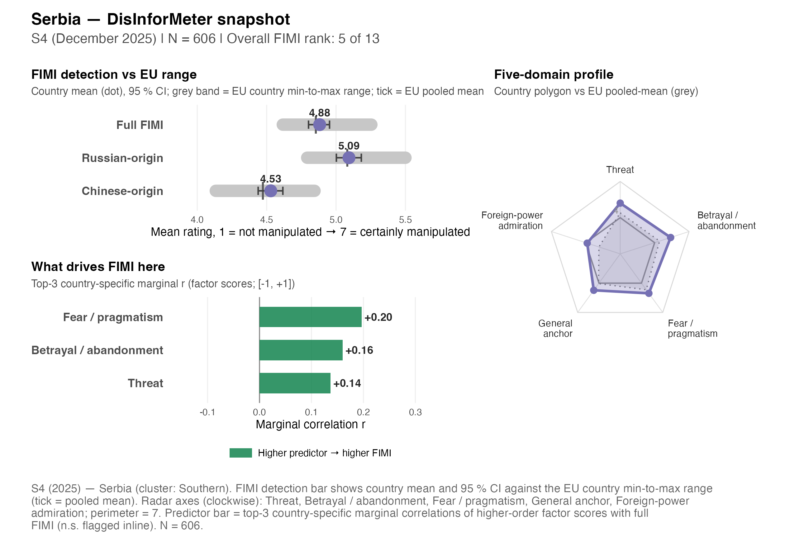
| Indicator | Value | vs 13-country avg. |
|---|---|---|
| Full FIMI detection | 4.88 | ▲ above avg. |
| Russian-origin detection | 5.09 | |
| Chinese-origin detection | 4.53 | |
| Russian − Chinese gap | +0.56 | |
| Overall receptivity composite | 4.85 | ▲ above avg. |
Five-domain receptivity profile (1–7; higher = more endorsement):
| Domain | Mean | EU avg. |
|---|---|---|
| Betrayal/Aband. | 5.40 | 4.43 |
| Admiration | 3.88 | 2.86 |
| Fear/Pragm. | 5.04 | 4.67 |
| General | 4.73 | 4.05 |
| Threat | 5.21 | 4.40 |
Strongest domain → Full-FIMI-detection associations (BRMS; positive = aligned with detection):
- Fear/Pragmatism: β = +0.17 [+0.10, +0.24] — aligned with detection
- General Anchor: β = -0.13 [-0.32, +0.03] (n.s.) — blind-spot (lower detection)
- Threat: β = +0.09 [-0.02, +0.19] (n.s.) — aligned with detection
Italy
Regional cluster: Southern.
| Indicator | Value | vs 13-country avg. |
|---|---|---|
| Full FIMI detection | 4.78 | ▼ below avg. |
| Russian-origin detection | 5.09 | |
| Chinese-origin detection | 4.27 | |
| Russian − Chinese gap | +0.82 | |
| Overall receptivity composite | 4.11 | ▲ above avg. |
Five-domain receptivity profile (1–7; higher = more endorsement):
| Domain | Mean | EU avg. |
|---|---|---|
| Betrayal/Aband. | 4.54 | 4.43 |
| Admiration | 2.86 | 2.86 |
| Fear/Pragm. | 4.94 | 4.67 |
| General | 4.09 | 4.05 |
| Threat | 4.19 | 4.40 |
Strongest domain → Full-FIMI-detection associations (BRMS; positive = aligned with detection):
- Fear/Pragmatism: β = +0.24 [+0.17, +0.32] — aligned with detection
- Foreign-Power Admiration: β = -0.14 [-0.26, -0.01] — blind-spot (lower detection)
- General Anchor: β = -0.07 [-0.22, +0.06] (n.s.) — blind-spot (lower detection)
Turkey
Regional cluster: Southern.
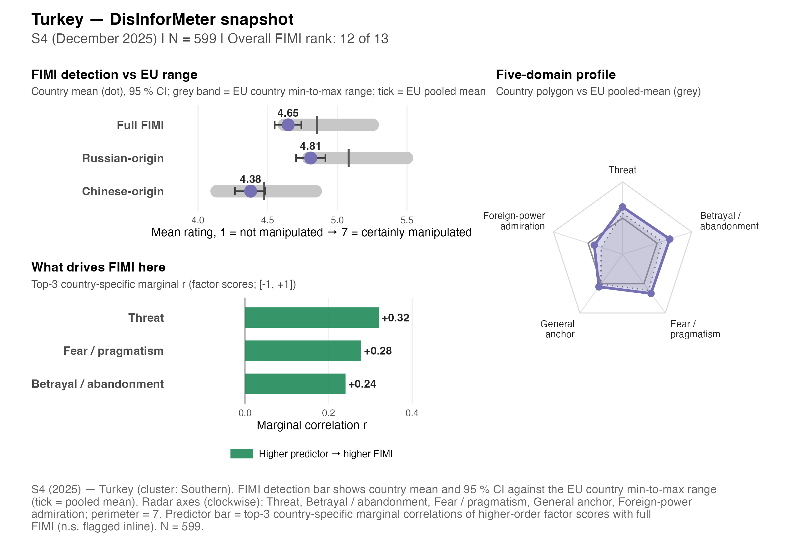
| Indicator | Value | vs 13-country avg. |
|---|---|---|
| Full FIMI detection | 4.65 | ▼ below avg. |
| Russian-origin detection | 4.81 | |
| Chinese-origin detection | 4.38 | |
| Russian − Chinese gap | +0.43 | |
| Overall receptivity composite | 4.54 | ▲ above avg. |
Five-domain receptivity profile (1–7; higher = more endorsement):
| Domain | Mean | EU avg. |
|---|---|---|
| Betrayal/Aband. | 5.10 | 4.43 |
| Admiration | 3.46 | 2.86 |
| Fear/Pragm. | 4.99 | 4.67 |
| General | 4.32 | 4.05 |
| Threat | 4.92 | 4.40 |
Strongest domain → Full-FIMI-detection associations (BRMS; positive = aligned with detection):
- Threat: β = +0.28 [+0.14, +0.43] — aligned with detection
- Fear/Pragmatism: β = +0.20 [+0.11, +0.28] — aligned with detection
- General Anchor: β = +0.13 [-0.02, +0.28] (n.s.) — aligned with detection
Western cluster
Belgium
Regional cluster: Western.
| Indicator | Value | vs 13-country avg. |
|---|---|---|
| Full FIMI detection | 4.82 | ▼ below avg. |
| Russian-origin detection | 5.03 | |
| Chinese-origin detection | 4.48 | |
| Russian − Chinese gap | +0.55 | |
| Overall receptivity composite | 3.94 | ▼ below avg. |
Five-domain receptivity profile (1–7; higher = more endorsement):
| Domain | Mean | EU avg. |
|---|---|---|
| Betrayal/Aband. | 4.25 | 4.43 |
| Admiration | 2.76 | 2.86 |
| Fear/Pragm. | 4.69 | 4.67 |
| General | 3.95 | 4.05 |
| Threat | 4.12 | 4.40 |
Strongest domain → Full-FIMI-detection associations (BRMS; positive = aligned with detection):
- Fear/Pragmatism: β = +0.28 [+0.20, +0.37] — aligned with detection
- Threat: β = +0.17 [+0.05, +0.29] — aligned with detection
- Betrayal/Abandonment: β = -0.09 [-0.21, +0.03] (n.s.) — blind-spot (lower detection)
Austria
Regional cluster: Western.
| Indicator | Value | vs 13-country avg. |
|---|---|---|
| Full FIMI detection | 4.76 | ▼ below avg. |
| Russian-origin detection | 4.96 | |
| Chinese-origin detection | 4.44 | |
| Russian − Chinese gap | +0.51 | |
| Overall receptivity composite | 4.01 | ▼ below avg. |
Five-domain receptivity profile (1–7; higher = more endorsement):
| Domain | Mean | EU avg. |
|---|---|---|
| Betrayal/Aband. | 4.24 | 4.43 |
| Admiration | 2.80 | 2.86 |
| Fear/Pragm. | 4.89 | 4.67 |
| General | 4.04 | 4.05 |
| Threat | 4.15 | 4.40 |
Strongest domain → Full-FIMI-detection associations (BRMS; positive = aligned with detection):
- Fear/Pragmatism: β = +0.24 [+0.17, +0.32] — aligned with detection
- Foreign-Power Admiration: β = -0.14 [-0.29, -0.02] — blind-spot (lower detection)
- Betrayal/Abandonment: β = -0.14 [-0.27, -0.02] — blind-spot (lower detection)
France
Regional cluster: Western.
| Indicator | Value | vs 13-country avg. |
|---|---|---|
| Full FIMI detection | 4.71 | ▼ below avg. |
| Russian-origin detection | 5.06 | |
| Chinese-origin detection | 4.13 | |
| Russian − Chinese gap | +0.92 | |
| Overall receptivity composite | 4.00 | ▼ below avg. |
Five-domain receptivity profile (1–7; higher = more endorsement):
| Domain | Mean | EU avg. |
|---|---|---|
| Betrayal/Aband. | 4.36 | 4.43 |
| Admiration | 2.78 | 2.86 |
| Fear/Pragm. | 4.80 | 4.67 |
| General | 4.01 | 4.05 |
| Threat | 4.12 | 4.40 |
Strongest domain → Full-FIMI-detection associations (BRMS; positive = aligned with detection):
- Fear/Pragmatism: β = +0.27 [+0.20, +0.36] — aligned with detection
- Foreign-Power Admiration: β = -0.17 [-0.31, -0.05] — blind-spot (lower detection)
- Threat: β = +0.07 [-0.05, +0.17] (n.s.) — aligned with detection
Germany
Regional cluster: Western.
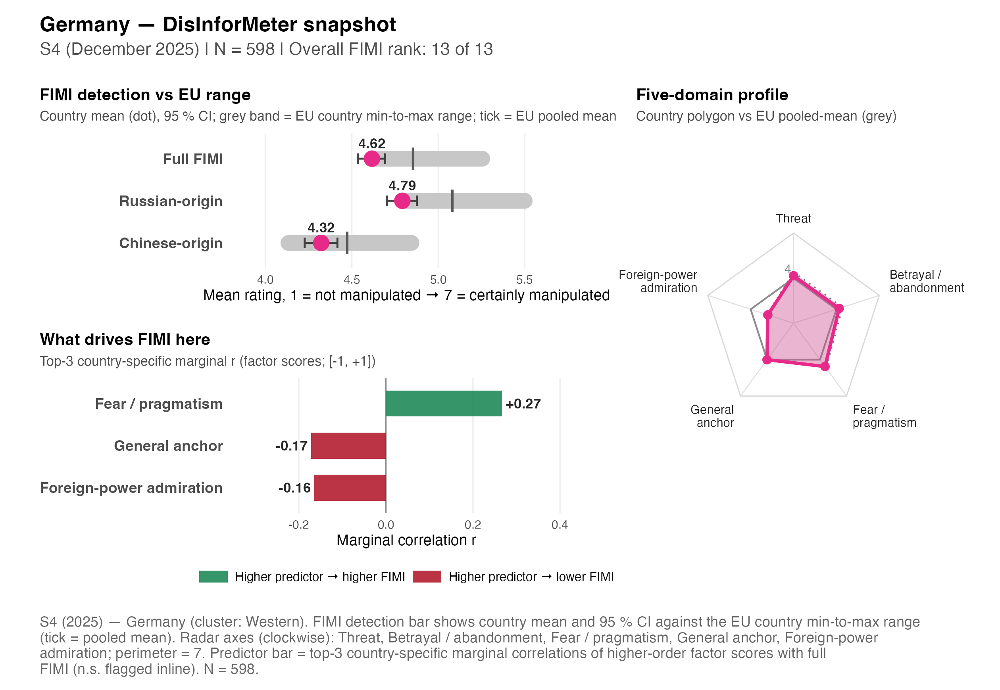
| Indicator | Value | vs 13-country avg. |
|---|---|---|
| Full FIMI detection | 4.62 | ▼ below avg. |
| Russian-origin detection | 4.79 | |
| Chinese-origin detection | 4.32 | |
| Russian − Chinese gap | +0.47 | |
| Overall receptivity composite | 3.94 | ▼ below avg. |
Five-domain receptivity profile (1–7; higher = more endorsement):
| Domain | Mean | EU avg. |
|---|---|---|
| Betrayal/Aband. | 4.19 | 4.43 |
| Admiration | 2.80 | 2.86 |
| Fear/Pragm. | 4.57 | 4.67 |
| General | 4.00 | 4.05 |
| Threat | 4.16 | 4.40 |
Strongest domain → Full-FIMI-detection associations (BRMS; positive = aligned with detection):
- Fear/Pragmatism: β = +0.22 [+0.15, +0.29] — aligned with detection
- Threat: β = +0.19 [+0.08, +0.31] — aligned with detection
- Betrayal/Abandonment: β = -0.13 [-0.25, -0.01] — blind-spot (lower detection)
Analyst views across all countries
For cross-country comparison, the analyst matrices place every country’s diagnostics side by side, and the synthesis views compress each country to a single pattern row / policy-signal cell.
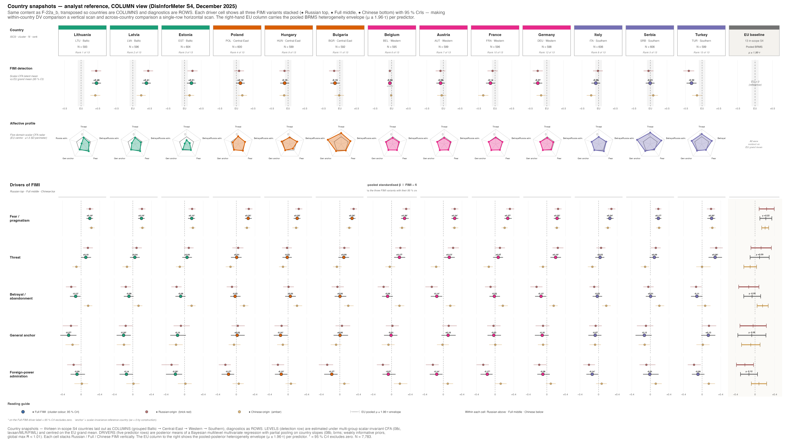
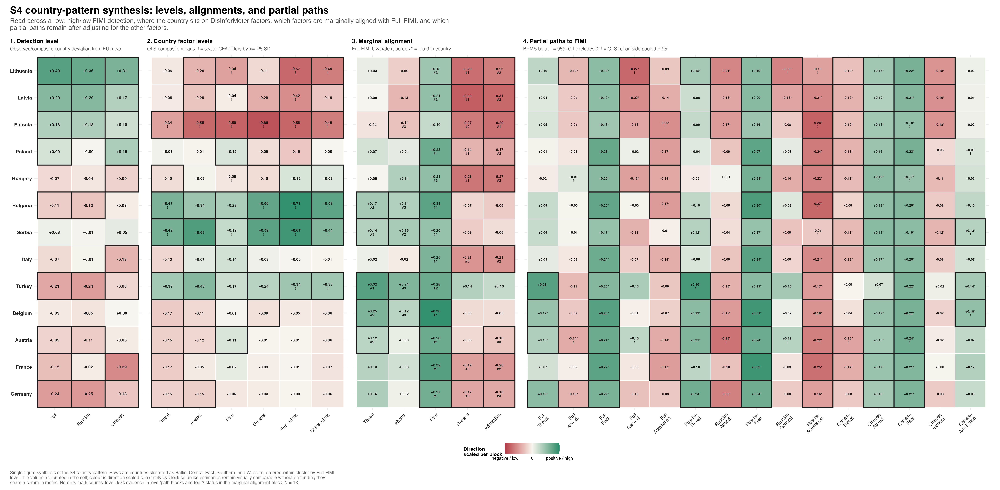
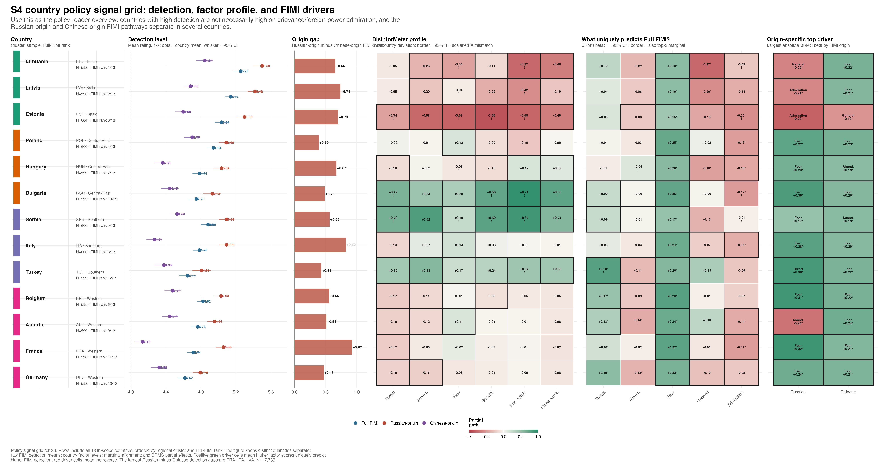
Recommended priority countries for follow-up (T-03)
| Where the next DisInforMeter wave should go | ||||
| Six recommended targets ordered by deployment urgency, informed by S4 country-coverage gaps and EU-policy priorities (DG CONNECT, EEAS, EDMO). | ||||
| # | Target country / region | Rationale | Recommended next wave | Time horizon |
|---|---|---|---|---|
| 1 | Eastern-neighbourhood frontline (Estonia, Latvia, Lithuania) | Highest overall FIMI detection in S4 but largest Russian-origin / Chinese-origin gap; baseline for measuring the impact of EU strategic-communication interventions. | Annual Short DisInforMeter wave + FIMI battery refreshed for new narrative cycles | 12 months |
| 2 | Black Sea cluster (Bulgaria, Romania, Greece, Cyprus) | S4 included BGR only; substantial coverage gap in the southern flank where Russian-origin narratives circulate via Greek / Bulgarian-language media. Cluster-level survey would extend the deployment evidence base. | Multinational deployment, Short DisInforMeter + FIMI | 12-18 months |
| 3 | Western neighbours (France, Belgium, Netherlands, Germany) | S4 covered DEU / FRA / BEL; NLD missing. Western cluster shows lowest overall detection -- useful to track whether receptivity shifts under new EU media-literacy investments under EDAP. | Short DisInforMeter (no FIMI refresh required initially) | 24 months |
| 4 | Candidate countries (Serbia, Turkey, Montenegro, North Macedonia, Bosnia & Herzegovina) | Serbia and Turkey are already in S4. Extending to MKD / MNE / BIH would give the EEAS a regionally-comparable instrument to monitor FIMI exposure ahead of and during accession negotiations. | Bilateral collaboration with national statistical offices; Short DisInforMeter | 24 months |
| 5 | Visegrád (Poland, Hungary, Czechia, Slovakia) | S4 covered POL / HUN. Adding CZE / SVK would close the V4 set and allow within-cluster comparison of media policy impact. | Short DisInforMeter; pair with national media-authority follow-up survey | 24 months |
| 6 | Nordics (Finland, Sweden, Denmark, Norway) | Not in S4. Frontline FIMI exposure but high baseline trust; high-priority benchmark for the FIMI-resilience comparison the report's §6 anchors against. | Short DisInforMeter + FIMI | 24-36 months |
| Source: Author judgement informed by S4 country coverage gaps and EU-policy priorities (DG CONNECT, EEAS, EDMO). Reproduction code: scripts/policy_report/T-03_priority_countries.R. | ||||
Note
Georgia is held out of the current cut. The S4 wrangled parquet still carries country-of-origin rather than residence, leaving Georgia with a single respondent — too few for any country-level profile. It is restored once the panel provider returns residence data.